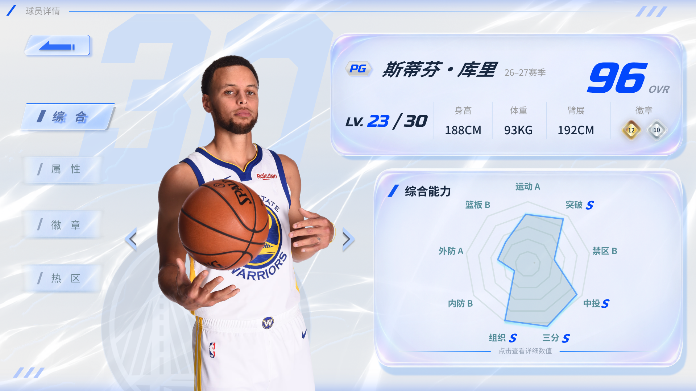
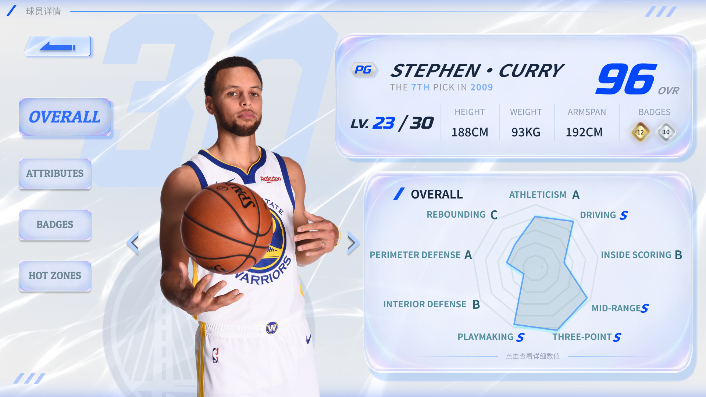
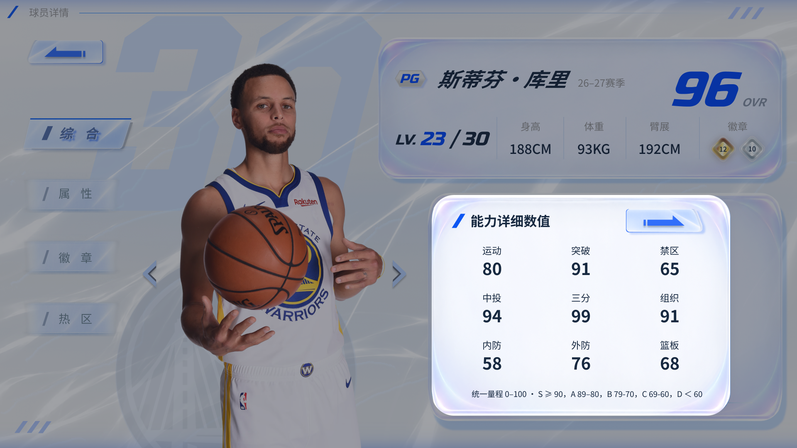
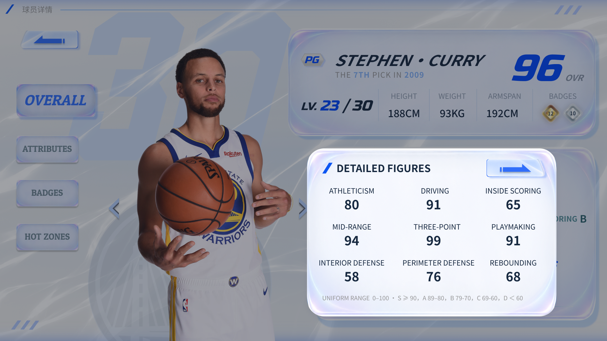
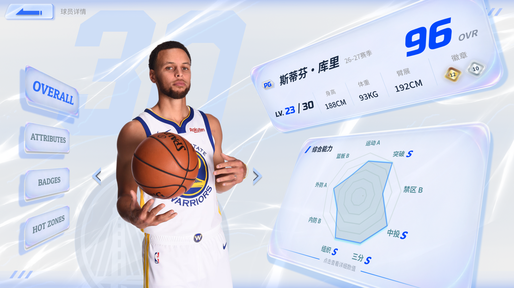

页面进入
导航栏从屏幕左侧淡入滑入；基础信息、能力面板从画面右侧淡入平移，建立阅读顺序。
建议时长：240–320ms；间隔60–80ms球员详情 / 界面设计
PLAYER PROFILE
以浅色档案式界面呈现球员信息、综合能力与界面状态。
查看 Figma 源文件



本方案以“浅色竞技档案”为核心，将冰白、浅灰与电光蓝结合，通过通透面板、细腻高光及斜切线条建立清爽且富有速度感的篮球游戏界面。
左侧以真实球员形象与大号球衣号码和队标强化人物识别，右侧突出姓名和总评，并有序呈现基础信息。中英两个版本的导航栏按键做出区分，以适应不同文字的风格。
综合能力采用九维雷达图与字母评级，便于快速识别球员特点；点击后展开详细数值，兼顾首屏简洁与信息完整。中英文版本保持统一布局与操作逻辑，并针对文本长度调整排版。
导航栏从屏幕左侧淡入滑入；基础信息、能力面板从画面右侧淡入平移，建立阅读顺序。
建议时长：240–320ms；间隔60–80ms人物渐显并向内侧移动12–20px，背后号码稍后淡入。
建议时长：350–450ms网格先淡入，能力区域由中心向四周展开，评级随后显示。
建议时长：400–550ms点击雷达图后遮罩渐显，数值卡从雷达区域轻微放大并淡入。
建议时长：200–280ms关闭按钮、点击遮罩区域或按Esc键触发淡出，恢复雷达图浏览。
建议时长：160–200ms蓝色描边与局部高光增强，选中项保持蓝色强调。
建议时长：120–160ms按钮缩小至98%，释放后恢复；Tab选中标记随切换移动。
建议时长：80–120ms点击球员两侧箭头或手指横向左右滑动屏幕；人物、姓名、号码及数据同步过渡，雷达图平滑变形。
建议时长：250–350ms白色流光沿既有斜向路径缓慢移动，透明度轻微变化。
建议时长：8–12秒循环冷白与淡蓝高光沿边缘掠过，避免整圈同时闪亮。
建议时长：5–8秒循环